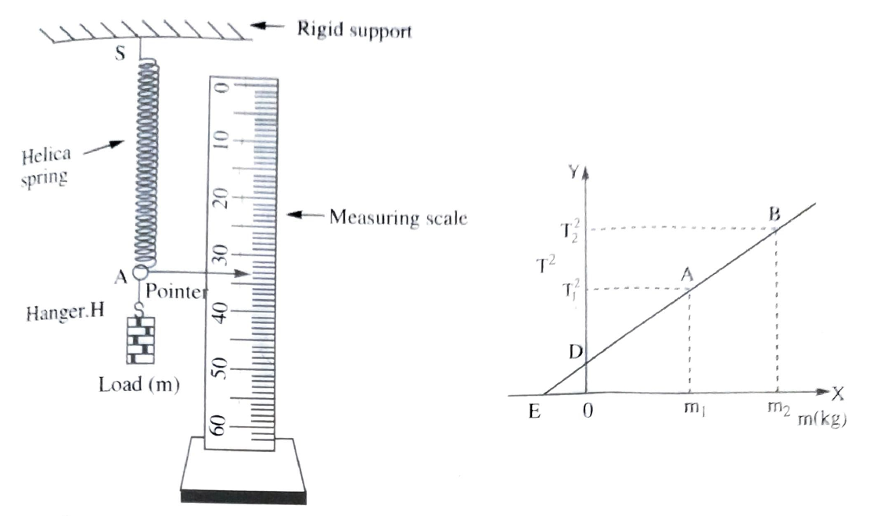

To find the force constant and effective mass of a helical spring by plotting T2 -m graph using method of oscilation.
Light weight helical spring with a pointer attached the lower case and a hook/ring for suspending it from a hanger,(diameter of the spring may be about.1-1.5cm inside or same as that in a spring balence of 100 g). a rigid support,hanger and five slotted weights of 10g each(in case the spring constant is of high value one may use slotted weights of 20g).clamp stand, a balence, a measure scale(15-30cm) and a stop-watch(with smallest division of 0.1sec).
Spring constant(or force constant) of spring is given by
\(Spring\, constant\, K=\frac{Restoring\, \, forces}{Extension}\)
Thus,spring constant is the restoring force per unit extension in the spring.Its value is determined by the elastic prorperties of the apring.A given object ia attached to the free end of a spring which is suspended from a rigid point support(a nail,fixed to a wall).If the object is pulled down and then released,it executes simple harmonic oscillations.
The time period(T) of oscillations of a helical spring of spring constant K is given by the relation for time period.
\(T=2\pi \sqrt{\frac{m}{k}}\)
where m is the mass of the suspended object.If the spring has a large mass of its own, the expression changes to
\(T=2\pi \sqrt{\frac{m_{0}+m_{1}}{k}}\)
where m0 and m are the effective masses of the spring system(the spring along with the pointer and the hanger) and the suspended object respectively.The time period of a spring(having large sprong constant is small)
To eliminate the term m0 of the spring system appearing in expression for T1 we can suspend two different objects(loads) of masses m1 and m2 and measure their respective periods of oscillations T1,T2 and then,
\(T_{1}=2\pi \sqrt{\frac{m_{0}+m_{1}}{k}}\, \, and\, T_{2}=2\pi \sqrt{\frac{m_{0}+m_{2}}{k}}\)
on eliminating m0 from the above equation,we ger
\(\mathbf{K=\frac{4\pi ^{2}(m_{1}-m_{2})}{(T_{1}^{2}-T_{2}^{2})}}\) expresion(1)
Using the above eqation and knowing the value of m1,m2,T1 and T2 the spring constant K of the spring system can be determined.
The number of oscillation,n should be large enough to keep the error minimum in measurable of time.One convenient method to decide on the number n is based on the smallest value measurable of the stop-watch.If the least count of the stop-watch is 0.1 s,then to have 1% error in measurement,the minimum time measured should be 10.0 s.hence the number n for oscillations should be so chosen that oscillating mass takes more than 10.0 s to complete them.